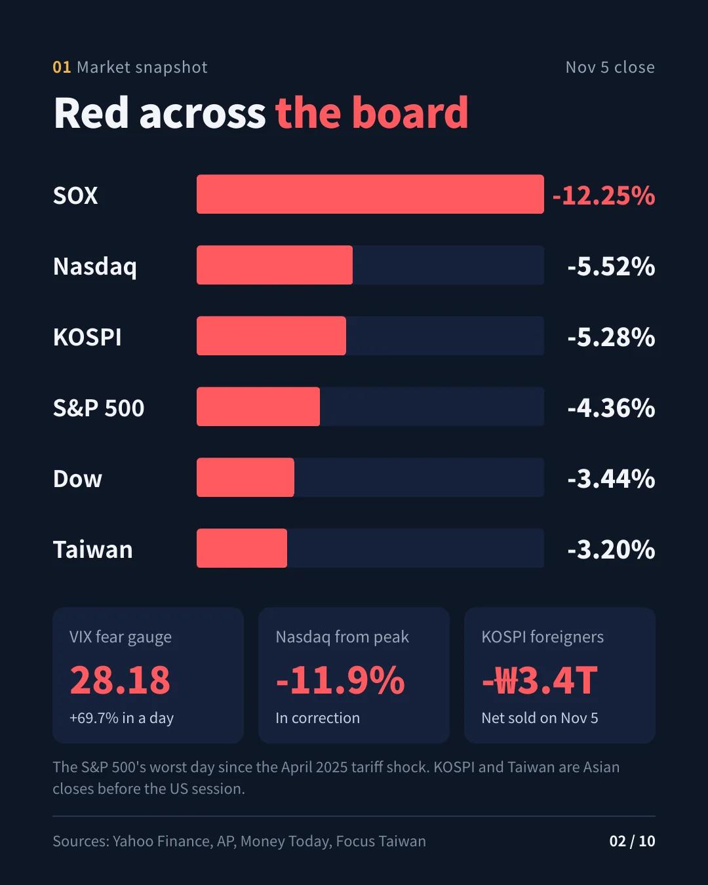
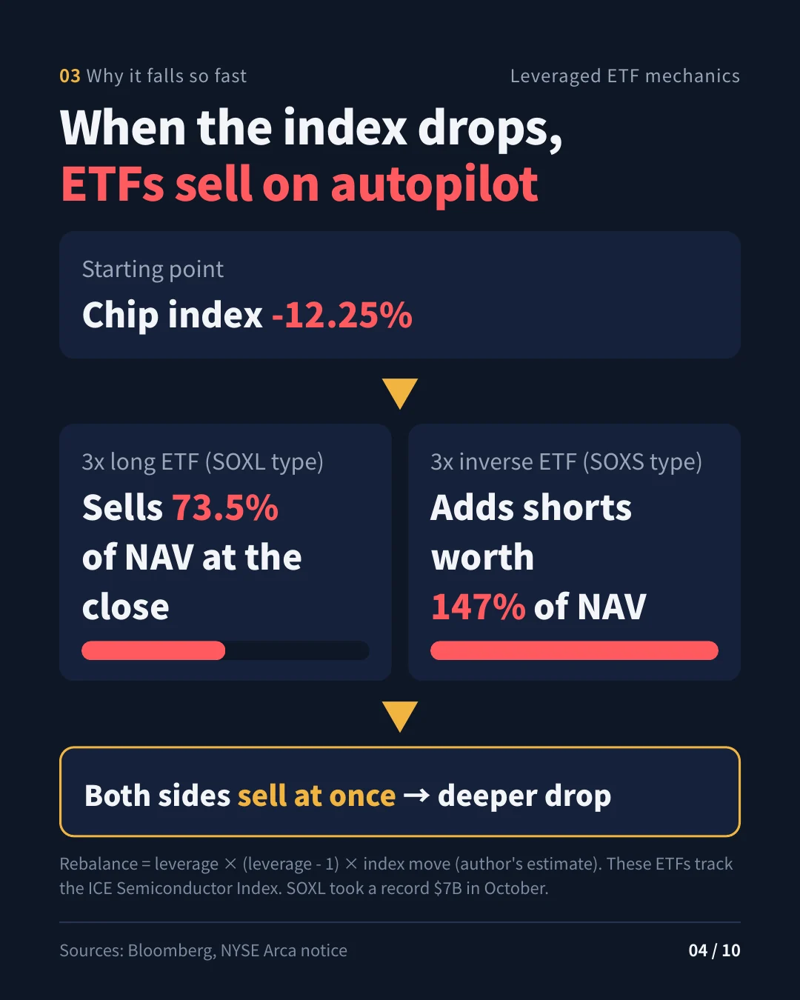
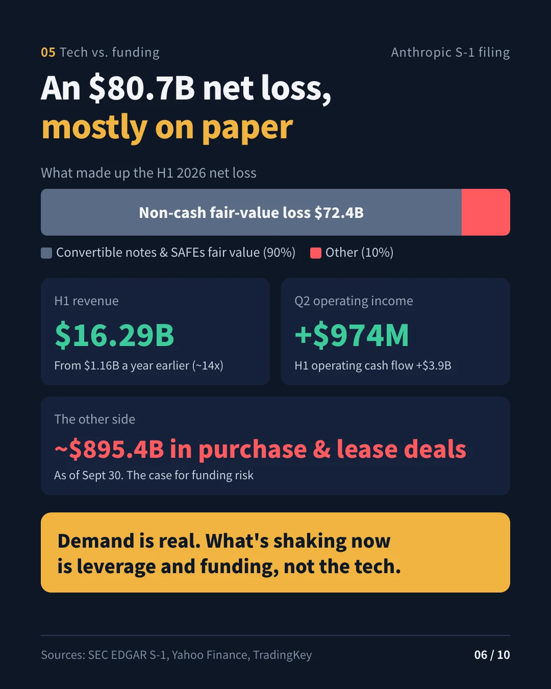
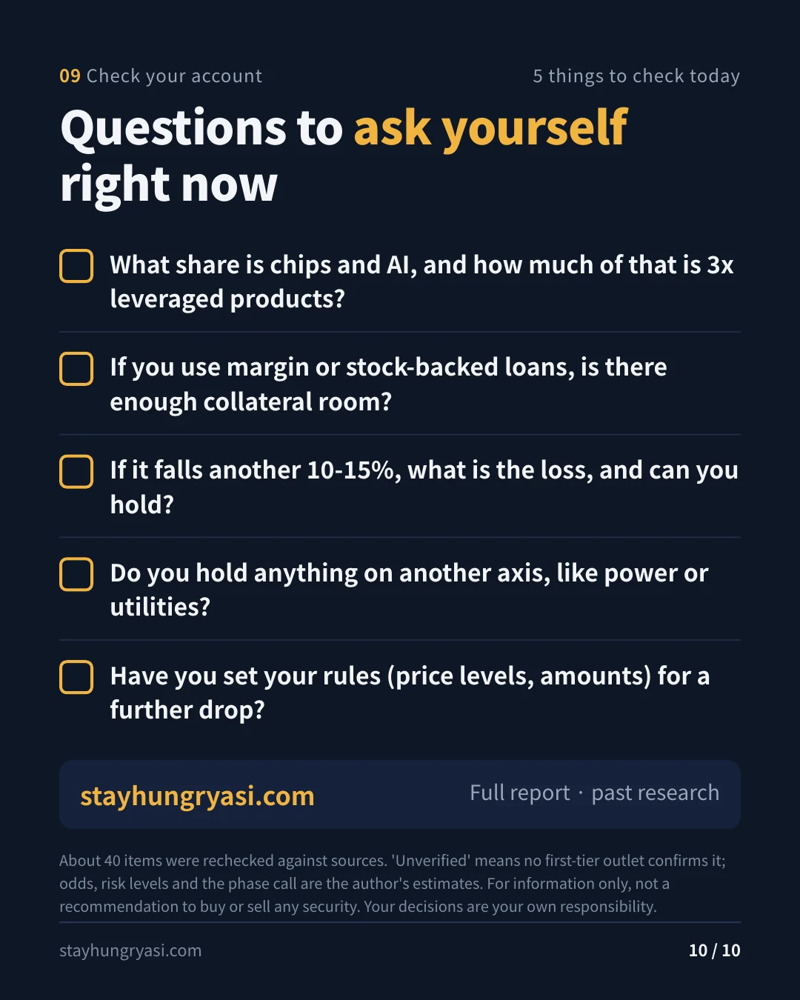

Data as of the Nov 5, 2026 US regular-session close · Written Nov 6, 2026, 07:00 (Korea time) · stayhungryasi.com
Labeling: figures are facts as stated in the linked sources. "Estimate" marks the author's judgment, and "unverified" marks items that could not be confirmed by primary media. After the draft, about 40 items were checked against their sources again; the corrections are collected in the last section.
Conflict-of-interest notice: This research was written using Anthropic's AI (Claude), and the text discusses Anthropic's S-1 and IPO schedule. This is not investment advice.
The key points in 10 cards. Click an image to enlarge it.
| Indicator | Close | Change | Notes |
|---|---|---|---|
| S&P 500 | 7,353.73 | -4.36% | Worst day since the April 2025 'Liberation Day' tariff shock |
| Nasdaq Composite | 24,315.00 | -5.52% | In correction territory at -11.9% from its high. Some outlets put the drop at -5.2% |
| Dow | 51,523.06 | -3.44% | -1,833 points |
| PHLX Semiconductor (SOX) | — | -12.25% | Larger than the -10.3% on Jun 5, making it the biggest drop since March 2020 (estimate, comparing closes) |
| VIX | 28.18 | +69.66% | |
| US 10-year | 4.837% | -5.7bp | |
| WTI (Dec contract) | 91.06 | +3.34% | |
| Bitcoin | 75,702 | -5.56% | Trades 24 hours; as of the time checked |
| KOSPI (Nov 5) | 5,383.80 | -5.28% | Foreigners net sold KRW 3.3928 trillion; individuals net bought KRW 2.2722 trillion and institutions KRW 845.7 billion |
| Taiwan TAIEX (Nov 5) | 41,574.72 | -3.20% | Lowest since Jul 31. Foreigners net sold NT$102.46 billion (10th largest on record) |
The catalyst was concern over AI data center regulation and taxes after the Democrats' midterm landslide (as reported by the media). Still, a large part of the day's drop is better explained by flows than by fundamentals, in particular the mechanical unwinding of leveraged positions (estimate). Foreigners net sold KRW 7.952 trillion of Korean stocks in the first 4 trading days of November, more than twice October's average daily selling pace.
| Fund (AUM) | Event | Date | Confirmation level |
|---|---|---|---|
| Walleye Capital ($17 billion) | Simplifying its in-house equity long-short business, letting go of much of that unit's leadership and investment teams, returning some capital. October -5.9% (worst month since March 2020) | Nov 5 | Confirmed by media |
| Engineers Gate | Cut most of its 'Synthesis' equity team, which combined quant and fundamental methods | Nov 5 | Confirmed by media (Bloomberg) |
| Millennium ($95 billion+) | Pulled leveraged capital: $1 billion+ from Troluce and $500 million from Axebrook | Nov 3 | Confirmed by media (Bloomberg) |
| Multi-strategy October returns | Millennium -2.3%, Marshall Wace Eureka -5.4%, ExodusPoint -2.4%, North Rock -2.3% | October | Cited by Bloomberg |
| Situational Awareness (about $10 billion since July) | Claims of a 'blow-up' spread on X (Kalshi and others) on Nov 5. In the July margin call it sold all its listed stocks, about 80% of which Citadel took over. Re-entered via options from September | Nov 5 | Unverified (social media) |
| 5 Fidelity ETFs | Disruptive Finance, Disruptive Medicine, Disruptors, Metaverse and Real Estate ETFs to be liquidated. Last trade Nov 12, liquidation around Nov 19 | Announced Oct 15 | Press release |
| Data center loan | An unidentified seller is trying to sell a $500 million data center loan | Nov 5 | Single report |
| Korean retail margin | Margin loan balance KRW 28.6446 trillion (Nov 4). Down about KRW 5.6 trillion from KRW 34.2887 trillion on Oct 12, a 3-month low | ~Nov 4 | Confirmed by media |
| Redemption gates | No new cases found in November. For reference, a Blue Owl private credit fund imposed an indefinite gate in March 2026 | — | — |
| November prime broker margin calls | No official reports. The confirmed report is the July FT story (Goldman and JPMorgan demanding more collateral) | — | Unverified |
Before the sale to Citadel, about 2/3 of Situational Awareness's portfolio was listed stocks, and most of the rest was an Anthropic stake. Even if the rumor is true, the volume of forced selling in the market would be limited; the fund's remaining risk is instead tied to Anthropic's IPO price (estimate).
| Path | Evidence | Risk level (estimate) |
|---|---|---|
| Prime brokers | About 16% of Goldman's prime lending was directly tied to AI memory stocks (as of Jun 30). Hedge fund gross leverage about 310% | High |
| Crowding | Hedge funds reversed all their AI net buying since 2025 in 5 trading days. The -4.2% fall in Goldman's hedge fund favorites basket on Oct 22 was the worst since 2011 (secondary source). Goldman judged the unwind to be closer to its start than its end | High |
| Leveraged ETFs | SOXL took in a record $7 billion in October. Every down day structurally produces rebalancing sales near the close | Very high |
| Bank credit | Banks are hitting internal limits and passing data center loan risk to outside investors (FT, May). Attempted sale of a data center loan on Nov 5 | Medium |
| Korea | Margin loans fell, but stock-lending balances rose 6.5% in 3 weeks (3,277.87 million shares). Investor deposits KRW 89.2273 trillion | Medium |
| Taiwan | Margin loan balances did not fall much even as the index dropped. Room for more forced selling | High |
Leveraged ETF rebalancing math (estimate). An ETF with leverage multiple L must adjust its exposure by L×(L-1)×r of net assets when its underlying index moves by r. For a 3x long ETF that is 6×|r|; for a 3x inverse ETF, 12×|r|. Plugging in SOX -12.25%, a 3x long ETF has to sell about 73.5% of its net assets, and a 3x inverse ETF has to add short exposure equal to about 147% of its net assets. In other words, long and short leveraged ETFs were both selling near the close. Note that since 2021 the underlying index of SOXL and SOXS has been the ICE Semiconductor Index, not SOX, so this calculation is an approximation.
In Korea, two rounds of forced margin selling in July and October already cleared much of retail leverage. Taiwan's margin balances have fallen less, so in the short term the risk of forced liquidation is greater on the Taiwan side (estimate).
Perez phase: from late frenzy to the start of the turning point (estimate).
Separating technology risk from financial risk
| Category | Evidence | Judgment (estimate) |
|---|---|---|
| Technology and demand | Anthropic S-1: 1H 2026 revenue $16.29 billion (same period a year earlier $1.16 billion), 2Q operating income $974 million, 1H operating cash flow +$3.9 billion. Of the $80.7 billion net loss, $72.4 billion is fair-value changes on convertible notes and SAFEs (non-cash) | Demand is real |
| Finance and funding | Fund leverage, prime broker concentration, bank limits on data center loans, Anthropic's purchase and lease commitments of about $895.4 billion as of Sep 30, IPO supply overhang | The main risk now |
Historical comparisons (based on general historical knowledge)
| Case | Similarities | Differences |
|---|---|---|
| Railways 1847 | Speculative capital laid the infrastructure first, and calls for further payment on partly paid shares effectively worked as margin calls | Today's AI already generates large revenue and operating income |
| Fiber 2000 | Debt-funded capex, fears of overbuilding | Hyperscalers' own cash flows are solid |
| ARK 2021 | Money ebbing out of thematic products (similar to Fidelity's 'Disruptive' ETF liquidations) | There was no fund leverage then; now fund leverage and 3x ETFs overlap |
| Scenario | Probability | Triggers | Relative strength / weakness candidates |
|---|---|---|---|
| Base: deleveraging wraps up after 2–4 weeks of volatility | 55% | Taiwan margin balances fall, Nvidia earnings in line, Anthropic listing completed | Stronger: power and utilities, volatility strategies / Weaker: neoclouds |
| Downside: cascading margin calls | 25% | A large fund's forced sale confirmed, IPO postponed, VIX 35 or higher, state-level data center moratoriums spread | Stronger: Treasuries and gold / Weaker: memory, Korea and Taiwan |
| Upside: July-style sharp rebound | 20% | Forced sellers confirmed to be out, Nvidia earnings surprise | Stronger: chip equipment and memory |
For reference, during the July Situational Awareness liquidation, many AI stocks that plunged right after the news rebounded 15–25% intraday. In October, defensive sectors such as energy and financials, and utilities and health care, held up well, and Walleye's volatility business had its best month on record in October. This is not a recommendation to trade any specific stock.
| Date (US) | Event |
|---|---|
| Nov 10 (Tue) | Earliest possible start of Anthropic's roadshow (15 days after the public S-1) |
| Nov 12 (Thu) | Last trading day for the 5 Fidelity ETFs |
| Nov 13 (Fri) | Earliest possible date for Anthropic to price its IPO (reflecting the Nov 11 SEC holiday) |
| Nov 14 (Sat) | 3Q 13F deadline. Because it falls on a weekend, the rules allow filing until the next business day (Nov 16). The first filings to reflect SA's sale to Citadel |
| Nov 16 (Mon) | Earliest possible listing date for Anthropic. Reports point to the week of Nov 16 as the target |
| Nov 17 (Tue) | Nvidia 3Q (FY27) earnings, after the US close / call at 7 a.m. Korea time on Nov 18 (Wed) |
| Nov 19 (Thu) | Scheduled liquidation date for the Fidelity ETFs |
| Before Nov 26 (Thu) | Anthropic listing target (before Thanksgiving); the fallback is year-end |
| Dec 8–9 | FOMC (per multiple secondary sources) |
Anthropic filed an amended S-1 with 3Q results on Nov 2, but as of Nov 5 there is still no amendment with an offering price range. Investors' valuation expectations have reportedly fallen from about $2 trillion to $1.5–1.6 trillion.
These are the corrections made to the draft. Two items remain unverified: the Situational Awareness collapse rumor and new prime broker margin calls in November.
| Item | Draft | Correction |
|---|---|---|
| Nvidia earnings date | Nov 18 (per estimate sites) | Nov 17 (Tue), per the company's official announcement (Oct 28) |
| Anthropic figures | Net loss and operating income 'contradict' each other | No contradiction. Most of the net loss is non-cash fair-value changes |
| Engineers Gate | Single report | Confirmed by a Bloomberg bylined article |
| SA sale | All listed stocks to Citadel | Sold everything; Citadel took about 80% of it |
| Leveraged ETFs | About 72% based on SOX | Underlying index is the ICE Semiconductor Index; approximation about 73.5% |
| Gallup 71% | Cited from a secondary page | Replaced with Gallup's original survey (March 2026) |
| Goldman 16% | Written in the present tense | Stated explicitly as a figure as of Jun 30 |
Where this view could be wrong. ① We assumed the SA shock is limited to options and private stakes, but if there is undisclosed borrowing or a structure that uses private stakes as collateral, the spillover could be larger. ② Anthropic's operating profit is a single quarter's figure, and given the $895.4 billion in commitments, its durability is not yet proven. ③ We read the federal stance as a 'slowdown', but if state-level data center moratoriums spread, the probability of the downside scenario rises.
stayhungryasi.com · This research is for information purposes only and is not investment advice. Investment decisions and their consequences rest with the investor.